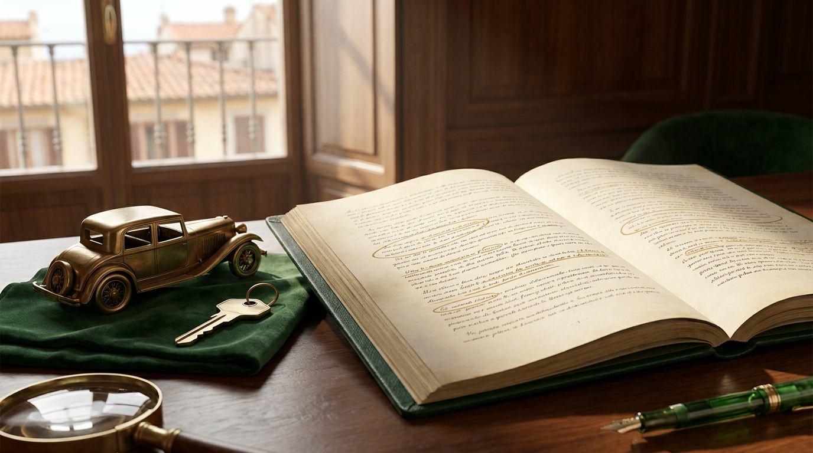

Clausole ambigue nelle polizze RC auto: l'interpretazione favorisce l'assicurato
Un orientamento della Corte di Cassazione torna sul tema delle clausole ambigue nelle polizze RC auto. Quando la previsione sull'abilitazione alla guida è formulata in modo oscuro, l'interpretazione gioca a sfavore di chi l'ha redatta: la compagnia. Il caso, relativo a un neopatentato alla guida di una vettura di grossa cilindrata, offre lo spunto per chiarire i limiti dell'azione di rivalsa.

Il caso
Un neopatentato è alla guida di una supercar e provoca un sinistro. La compagnia, dopo aver risarcito il terzo danneggiato, agisce in rivalsa contro il proprio assicurato: la polizza, sostiene, conteneva una clausola che escludeva la copertura per i conducenti privi di adeguata abilitazione alla guida del veicolo.
Il punto controverso è proprio il significato di quella clausola. "Abilitazione alla guida" può voler dire molte cose: possesso della patente idonea alla categoria del veicolo, rispetto dei limiti di potenza previsti per i neopatentati dal Codice della Strada, o ancora un generico requisito di esperienza. La formulazione era ambigua. E sull'ambiguità si è giocata la decisione.
Inquadramento normativo
Il contratto di assicurazione è un contratto per adesione: le condizioni le scrive la compagnia, l'assicurato le accetta in blocco. Per questo l'ordinamento prevede tutele specifiche.
Il primo riferimento è l'art. 1370 c.c., che detta il criterio dell'*interpretatio contra proferentem*: le clausole inserite in condizioni generali o in moduli predisposti da uno dei contraenti si interpretano, nel dubbio, a favore dell'altro. È un criterio sussidiario: opera solo dopo che i criteri principali di interpretazione del contratto (artt. 1362-1369 c.c., dalla comune intenzione delle parti al senso complessivo delle clausole) non hanno sciolto l'ambiguità. Quando la clausola resta oscura, il dubbio ricade su chi l'ha redatta.
Va poi distinta una questione tecnica spesso decisiva. L'art. 1341 c.c. richiede l'approvazione specifica per iscritto (la cosiddetta doppia firma) solo per le clausole limitative della responsabilità della compagnia. Non la richiede, invece, per le clausole delimitative dell'oggetto del contratto, cioè quelle che descrivono il rischio assicurato. La giurisprudenza è consolidata: una clausola che esclude dalla copertura certe ipotesi di guida può essere delimitativa dell'oggetto (e quindi valida anche senza doppia firma) oppure limitativa della responsabilità (e quindi inefficace se non specificamente approvata). La qualificazione cambia l'esito.
Sul fronte della rivalsa, occorre tenere presente la disciplina speciale. Il Codice delle Assicurazioni Private (D.lgs. 209/2005) disciplina l'RC auto: l'art. 144 attribuisce al terzo danneggiato l'azione diretta verso la compagnia, che non può opporgli le eccezioni derivanti dal contratto. La compagnia paga il terzo e, solo successivamente, può rivalersi sull'assicurato per le somme che non avrebbe dovuto pagare in base al contratto. Ma la rivalsa presuppone una clausola valida ed efficace: se la previsione è ambigua o inefficace, viene meno il fondamento del recupero.
Infine, quando l'assicurato è un consumatore, si aggiungono gli artt. 33-36 del Codice del Consumo (D.lgs. 206/2005) sulle clausole vessatorie, che possono determinarne la nullità di protezione. È il riferimento corretto: la vecchia disciplina degli artt. 1469-bis ss. c.c. è stata abrogata e trasfusa nel Codice del Consumo.
Implicazioni pratiche
La decisione produce effetti su entrambi i fronti.
Per l'assicurato, conferma che una clausola scritta male non può ritorcersi automaticamente contro di lui. Se la previsione su requisiti, abilitazioni o esclusioni è oscura, l'ambiguità diventa un'arma difensiva contro la rivalsa.
Per la compagnia, è un richiamo alla redazione. Chi predispone il contratto sopporta il rischio della formulazione: clausole generiche o equivoche rischiano di non reggere in giudizio, soprattutto quando incidono sulla copertura.
Un limite va però esplicitato, per evitare letture troppo ottimistiche. La tutela nasce dall'ambiguità della clausola, non da un favore generalizzato verso l'assicurato. Se la clausola è chiara, precisa e validamente inserita, produce effetti e la rivalsa è legittima. Il principio non trasforma ogni esclusione in una protezione per il contraente debole.
Il ragionamento, peraltro, non riguarda solo le polizze. Vale per tutti i contratti per adesione: locazioni con moduli standard, contratti di finanziamento, condizioni generali di servizi. Ovunque le clausole siano predisposte da una parte sola, l'oscurità si interpreta a sfavore di chi le ha scritte.
Cosa fare in concreto
- Conserva la polizza integrale, condizioni generali e moduli inclusi: la difesa si costruisce sul testo esatto, non sul preventivo o sulla sintesi commerciale.
- Verifica se la clausola contestata è ambigua e se incide sulla responsabilità della compagnia: in questo caso controlla la presenza della specifica approvazione per iscritto ex art. 1341 c.c.
- Distingui la tua posizione: se hai sottoscritto come consumatore, valuta l'applicabilità delle tutele del Codice del Consumo.
- Non firmare transazioni o riconoscimenti di debito proposti dalla compagnia in rivalsa prima di una valutazione tecnica della clausola.
- Sottoponi il testo contrattuale a una verifica preventiva quando guidi veicoli con requisiti particolari (potenza, categoria, limiti per neopatentati).
---
Contributo informativo a cura di Tamburro & Partners - Avv. Giuseppe Tamburro. Non costituisce parere legale.
Ogni contratto ha il suo equilibrio.
Se vuoi una revisione delle clausole o una redazione su misura, scrivi allo studio. Ti rispondiamo entro un giorno lavorativo.